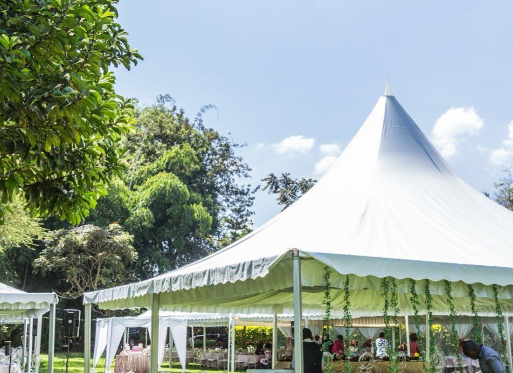

Mission Conference2026
Free to attend · For students and young adults · Everyone welcome
“The evangelization of the world in this generation.”
In 1886 a handful of college students gathered to pray, and over the next forty years more than 20,000 of them left their campuses for the nations. Then the fire faded. Mission Conference 2026 is where a new generation lights it again, and where SVM begins in Bryan–College Station.
“And this gospel of the kingdom will be preached in the whole world as a testimony to all nations.”Matthew 24:14
What the night looks like

01Tent Village
Doors open early. Walk the nations tent by tent and meet the teams already on the field.
- 02
Worship
A room full of students lifting one voice, the heartbeat of the night.
- 03
The Word
A clear, challenging call from Scripture to carry the gospel to the nations.
- 04
The Vision
Where SVM is going, how the sending pathway works, and where you fit in it.
 05
05The Sending
Respond, sign a nation and take your first real step that same night.

The Tent Village
Every mission field gets its own tent. Step inside and meet the people who have been there: the food, the stories, the needs, the open doors. Walk from nation to nation, then pick the one God won't let you put down.
Nation booths
Maps, photos, prayer needs and real stories from every field we serve.
Meet the team
Talk face to face with the people already on the ground. Ask them anything.
Sign your nation
Found your field? Put your name on it in the SVM app and start the journey that night.
Open the SVM app →Into the World
SVM's mission program sends students on short-, mid- and long-term trips. Teach English, serve with local churches and share the gospel. You pay only for your flight, and you live simply with the local church the way they live.
Send a student. Reach a nation.
Students pay their own way, and the field carries no cost. Your gift helps cover flights for students who cannot, required travel insurance, weekly training and the work of the churches we serve with.
Gifts to IM Mission Foundation Group Corp (EIN 99-2847865), a 501(c)(3) nonprofit, are tax-deductible to the extent allowed by law. You will receive a receipt by email.
Questions, answered
Who is the conference for?
Students and young adults, from high schoolers to young professionals, and the leaders who invest in them. If the nations stir something in you, this night is for you.
How much does it cost?
The conference is free. For the mission trips that follow, you cover your flight and insurance. On the field you live simply with the local church, so there are no room, board or program fees.
Do I have to commit to going overseas?
No. Come to worship, walk the Tent Village and simply see. Take a next step only if, and when, you are ready.
Where exactly will it be held?
In Bryan–College Station, Texas. The venue is being finalized and will be announced soon. Register and we will email you the details first.
What time should I arrive?
Doors and worship start at 6:00 PM. The Tent Village is open all evening, so come early and take your time.
Who is hosting it?
IM Mission Foundation, together with co-hosting churches (IM Friend Baptist, First Baptist Church Normangee and Country Fellowship) and a committee of regional leaders. SVM is an independent movement the churches support, not a single church's event.

One night can change your world.
Reserve your place at SVM Mission Conference 2026. Bring a friend and come ready to be sent.
- Worship and a live missions experience
- Meet the mission teams
- Venue details by email first